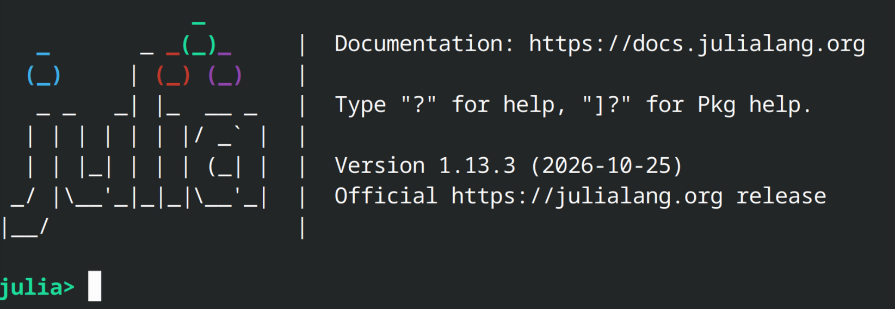
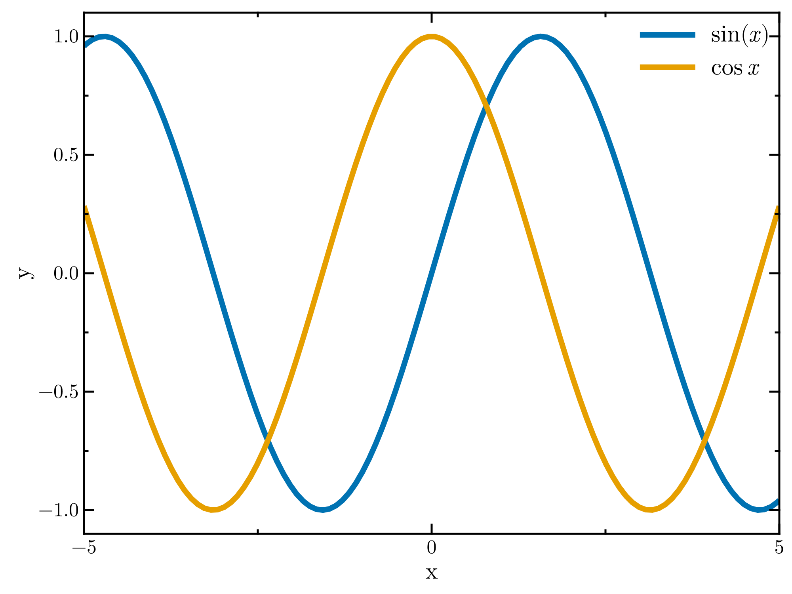
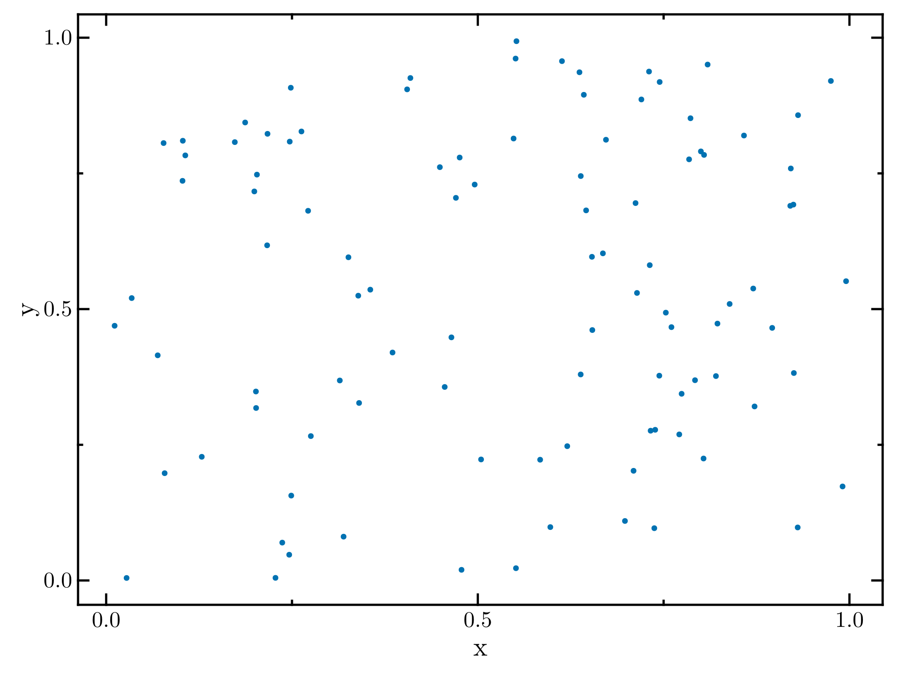

Julia setup
Assignments in this class are meant to be completed using the julia programming language. Julia is a JIT (just-in-time) language which allows to write very fast code (very close to the performance of compiled languages like C and Fortran), while still having the simplicity of an interpreted language like python. Although the first assignment can be completed without julia, the second assignment will rely on the use of packages to run stellar evolution calculations that are exclusive to julia. Instructions have been tested using version 1.13.3 of the julia language.
Installation instructions
Instructions to install julia for specific platforms is provided in the downloads section of the julia website. After installation, it is recommended to use individual environments for separate projects. When running julia from the terminal or shell, one can initialize julia using the present directory as the environment using julia --project=.. The linux bash example below creates a directory and then starts up julia using it as an environment:
mkdir lab1
cd lab1
julia --project=.This should open the julia REPL (read-eval-print-loop) which allows you to run julia code directly on your terminal. This should look like this:

Within the REPL we can open up the package manager by pressing ]. You can then install some packages in your environment that will be used for this assignment (beware that precompilation of several packages can sometimes take a couple of minutes):
(lab1) pkg> add CairoMakie DataFrames VirtualObservatory LaTeXStrings MathTeXEngineThese packages provide the following (press on the package names to see documentation):
CairoMakie: Makie is in my opinion the best plotting library in julia. Only issue is that compilation times and the time to produce the first plot within a session can be heavy, but once loaded it is very snappy.CairoMakieis a specific backend suitable to produce vector graphics.DataFrames: This package provides specific tools and data types to work with tabular data.VirtualObservatory: Provides utilities to access services that provide data following the Virtual Observatory protocol.LaTeXStrings: Convenience tool that allows to specify strings containing LaTeX code asL"\sin\theta", removing the need to escape backslashes.MathTeXEngine: Mainly used to provide particular fonts for figures.
After packages have been installed julia will create two files in the directory of the environment, Project.toml and Manifest.toml, the former of which lists the installed packages while the latter includes as well the exact versions used of these packages as well as their dependencies, enabling reproducibility.
Code editing tools
Using the repl is not really sustainable to code projects, so there are separate ways we can do that. A few are listed here.
VS code
If you are familiar with the Integrated Development Environment VS Code, then you can likely take advantage of the facilities developed for it to program in julia. Detailed instructions can be found here
Notebooks
If you are accustomed to jupyter-notebooks, the fastest way to get started is likely using Google colab. If you have a google account, you can create a new notebook there by selecting from the dropdown menu the option Runtime, Change runtime type and selecting julia.
Another alternative to run a notebook locally in your computer is to install the package IJulia. Instructions for that can be found here.
Basics of julia
We will not rely on complex features from the julia language, so if you're versed in python you should find julia quite familiar.Assigning numerical variables and performing arithmetic operations on them is straightforward.
a = 2.0
b = pi # the definition of pi is included by default
c = a+b # addition
d = b^a # exponentiation
e = sin(b) # basic mathematical functions are also defined in the language, no need to include a package
print("c=$(c), b=$(d), c=$(e)") # $() notation is used to read the value in parenthesis into the stringc=5.141592653589793, b=9.869604401089358, c=0.0You also have access to basic keywords for control flow, including if blocks and for loops. Here some small notational variations arise with respect to python. Blocks of code are not defined by indentation but by the use of the end keyword.
a = 1
b = 3
if a < 2 && b < 2 # && stands for 'and'
print("if was successful")
elseif a < 2 || b < 2 # || stands for 'or'
print("elseif was successful")
else
printf("Neither if or elseif were successful")
end
print("\n") # print a line break
# Add up all digits between 1 and 10 using a for loop
sumnumbers = 0
for i in 1:10
global sumnumbers = sumnumbers+i # global keyword is to refer to scope outside of for loop
end
print("Adding all numbers between 1 and 10 gives us $(sumnumbers)")elseif was successful
Adding all numbers between 1 and 10 gives us 55We can also define functions using the function keyword.
function add1(x)
return x+1
end
add1(1)2We often deal not just with scalars but also vectors or matrices. We can define a vector covering a range of values using the LinRange function.
xvals = LinRange(-5.0,5.0,11) # Create a vector with elements from -5.0 to 5.0 with 11 elements.11-element LinRange{Float64, Int64}:
-5.0, -4.0, -3.0, -2.0, -1.0, 0.0, 1.0, 2.0, 3.0, 4.0, 5.0Contrary to python, arrays in julia start at position 1, so if you attempt to access xvals[0] you will get an error.
Beware that many operations on vectors will not work as you might naively expect. If you try computing xvals^2, an error will be thrown as the ^ operation is not defined between a vector and an integer. You could think that the above operation is ambiguous, do we mean that we want to take the square of each element of the vector or instead that we want to take the dot product of xvals with itself? To explicitly state that an operation is meant to be done element by element, one can use a . before the operation. Further information on this notation can be found here.
xvals.^211-element Vector{Float64}:
25.0
16.0
9.0
4.0
1.0
0.0
1.0
3.999999999999999
9.0
16.0
25.0This can be done with any function. For instance the code below will apply our add1 function to each element of the array.
add1.(xvals)11-element Vector{Float64}:
-4.0
-3.0
-2.0
-1.0
0.0
1.0
2.0
3.0
4.0
5.0
6.0Finally, if we want to use specific tools provided by an installed package, we need to load it up into the session using
using PACKAGENAMEPlotting
For plots I highly recommend using Makie, although there are other options such as Plots.jl which have faster compilation time. To plot in Makie, we can make use of the CairoMakie engine that we installed previously. I would also suggest using the following code to adjust the default theme of Makie for something better looking:
using CairoMakie
using LaTeXStrings
using MathTeXEngine
function basic_theme()
return Theme(fonts=(regular=texfont(:text), bold=texfont(:bold),
italic=texfont(:italic), bold_italic=texfont(:bolditalic)),
fontsize=20, size=(1000, 750), linewidth=7,
Axis=(xlabelsize=30, ylabelsize=30, titlesize=30, xgridvisible=false, ygridvisible=false,
spinewidth=2.5, xminorticksvisible=true, yminorticksvisible=true, xtickalign=1, ytickalign=1,
xminortickalign=1, yminortickalign=1, xticksize=14, xtickwidth=2.5, yticksize=14,
ytickwidth=2.5, xminorticksize=7, xminortickwidth=2.5, yminorticksize=7, yminortickwidth=2.5,
xticklabelsize=25, yticklabelsize=25, xticksmirrored=true, yticksmirrored=true),
Legend=(patchsize=(70, 10), framevisible=false, patchlabelgap=20, rowgap=10, labelsize=30))
end
set_theme!(basic_theme())We can then create a simple line plot as follows (for all options for line plots see the documentation):
f = Figure()
ax = Axis(f[1,1], xlabel="x", ylabel="y") # create an axis with corresponding label names
xvals = LinRange(-3*pi,3*pi,200)
lines!(ax, xvals, sin.(xvals), label=L"\sin(x)") # plot one line
lines!(ax, xvals, cos.(xvals), label=L"\cos{x}") # plot a second line
xlims!(ax, -5, 5) # set the range of the x-axis
ylims!(ax, -1.1, 1.1) # set the range of the y-axis
axislegend(ax)
f
We can also produce a scatter-plot (for all options for scatter plots check the documentation):
f = Figure()
ax = Axis(f[1,1], xlabel="x", ylabel="y") # create an axis with corresponding label names
randx = rand(100)
randy = rand(100)
scatter!(ax, randx, randy)
f